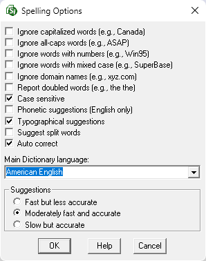

This command can also be executed from the SI Editor's Toolbar.
The Spelling Options window will be accessible by clicking the Options button when performing a Spell Check, when a misspelled word is detected. These options manage various settings that control the spell checker's operation.

- Ignore capitalized words (e.g., Canada) - When enabled, words beginning with a capital letter are ignored. You might enable this option if the text being checked contains proper names.
- Ignore all-caps words (e.g., ASAP) - When enabled, words with all capital letters are ignored. You might enable this option if the text being checked contains acronyms.
- Ignore words with numbers (e.g., Win95) - When enabled, words with embedded digits are ignored. You might enable this option if the text being checked contains any code words or other symbols that contain numbers.
- Ignore words with mixed case (e.g., SuperBase) - When enabled, the Spell Check disregards words with non-standard mixed-case lettering (upper and lowercase) that deviate from standard capitalization rules.
- Ignore domain names (e.g., xyz.com) - When enabled, the Spell Check ignores words that appear to be Internet domain names.
- Report doubled words (e.g., the the) - When enabled, the Spell Check detects repeated words.
- Case sensitive - When enabled, a distinction is made between capitalized and non-capitalized words. Note that the performance of the spelling checker will be reduced if this option is disabled.
- Phonetic suggestions (English only) - When enabled, suggestions are made based on phonetic (sounds-like) similarity to the misspelled word. This option tends to improve suggestions for badly misspelled words. Enabling this option will increase the time required to locate suggestions. Note that either this option or the Typographical suggestions option must be enabled, or no suggestions will be offered.
- Typographical suggestions - When enabled, suggestions are made based on how closely they resemble the misspelled word visually (typographically). Note that either this option or the Phonetic Suggestions option must be enabled, or no suggestions will be offered.
- Suggest split words - When enabled, this option will suggest splitting a single misspelled word into two separate, correct words.
- Auto correct - When enabled, words marked with Auto change actions will automatically be changed to their specified replacements. When disabled, you will be prompted before the words are changed.
- Main Dictionary language - The drop-down list allows you to set the language for the main dictionary to check spelling. It is important to note that the list only shows languages for dictionaries installed on your system (e.g., American English).
- Suggestions - Determines the speed and accuracy of the initial search for suggested replacements for misspelled words by offering three distinct search speed options (Fast but less accurate, Moderately fast and accurate, and Slow but accurate). When a misspelled word is detected, a search is automatically made for suggestions. This option controls the speed and accuracy of this automatic search. Clicking the Suggest button in the Spell Check window causes an increasingly more accurate (but slower) search for suggestions.
Standard Windows Commands
 The OK button will execute and save the selections made.
The OK button will execute and save the selections made.
 The Cancel button will close the window without recording any selections or changes entered.
The Cancel button will close the window without recording any selections or changes entered.
 The Help button will open the Help Topic for this window.
The Help button will open the Help Topic for this window.